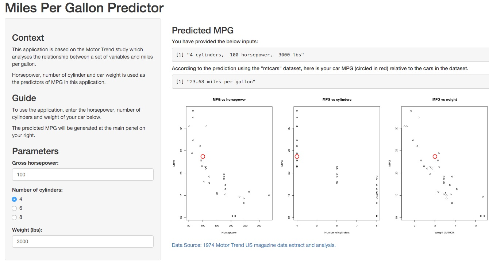

This application is based on the Motor Trend study which analyses the relationship between a set of variables and miles per gallon.
Variables that are used to quantify this relationship include:
- Horsepower,
- Number of cylinder and
- Car weight (in lbs)
Kenrick Setiobudi
Consultant
This application is based on the Motor Trend study which analyses the relationship between a set of variables and miles per gallon.
Variables that are used to quantify this relationship include:
- Horsepower,
- Number of cylinder and
- Car weight (in lbs)
The data was extracted from the 1974 Motor Trend US magazine, and comprises fuel consumption and 10 aspects of automobile design and performance for 32 automobiles (1973–74 models).
Linear regression model is used to quantify the relationship between miles per gallon and the three predictors (horsepower, cylinders and weight of car).
For more information on which predictors best predicted mileage per gallon based on Motor Trend's dataset, another study has been conducted which is available in this link.
| Index | Field | Detail |
|---|---|---|
| [, 1] | mpg | Miles/(US) gallon |
| [, 2] | cyl | Number of cylinders |
| [, 3] | disp | Displacement (cu.in.) |
| [, 4] | hp | Gross horsepower |
| [, 5] | drat | Rear axle ratio |
| [, 6] | wt | Weight (lb/1000) |
| [, 7] | qsec | 1/4 mile time |
| [, 8] | vs | V/S |
| [, 9] | am | Transmission (0 = automatic, 1 = manual) |
| [,10] | gear | Number of forward gears |
| [,11] | carb | Number of carburetors |

Here is the link to the application.